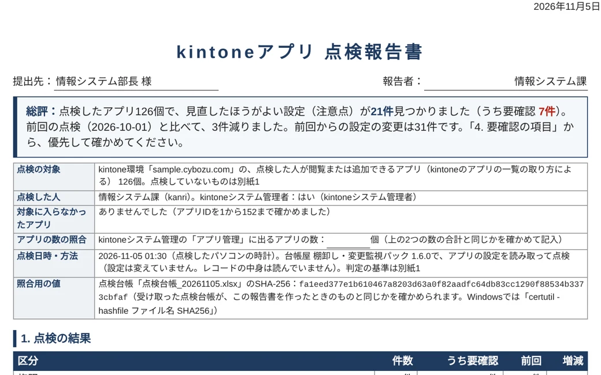
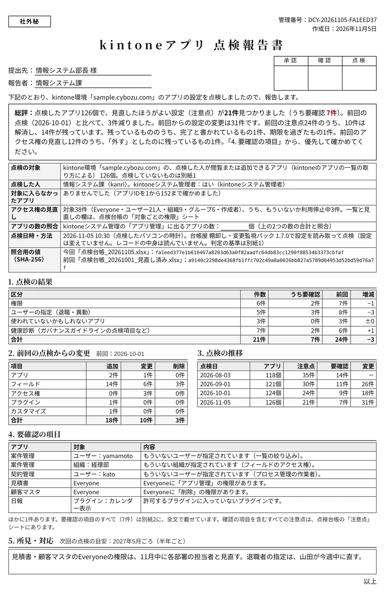
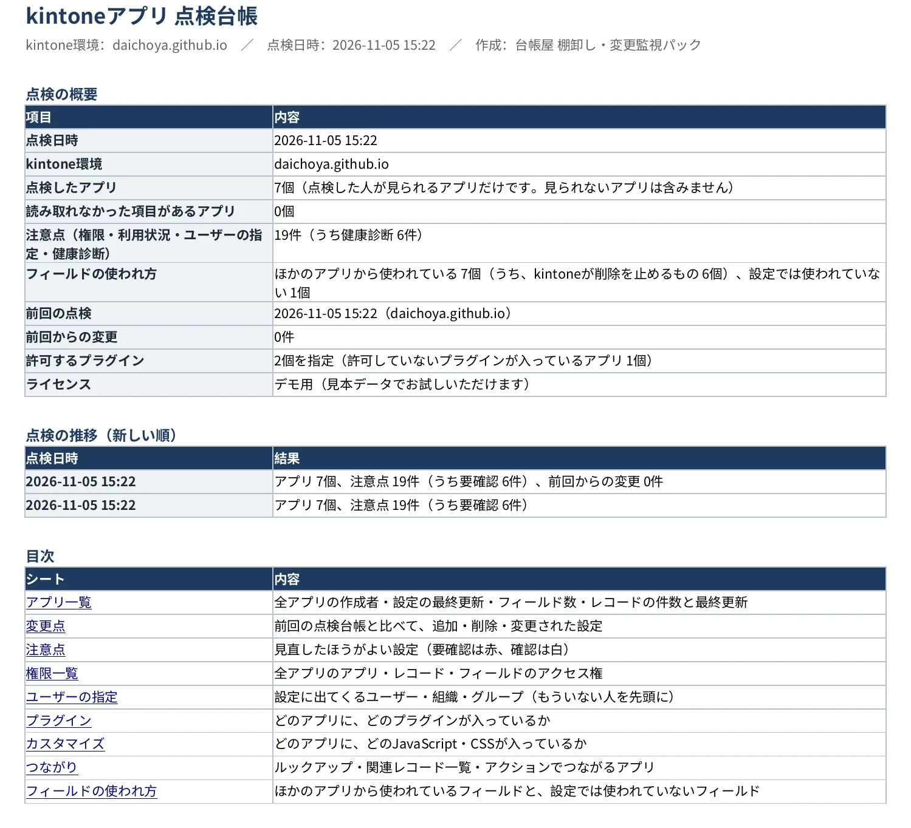
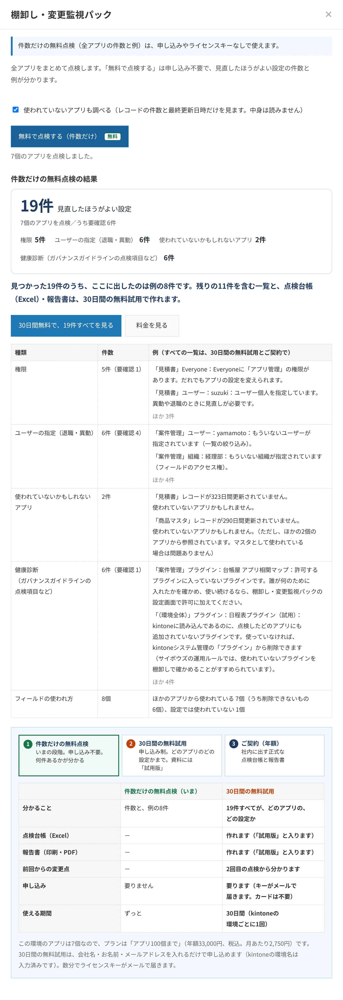

棚卸し・変更監視パック
有料kintoneの全アプリを、まとめて点検。
kintoneの全アプリの権限の注意点・退職した人の指定・使われていないアプリ・ガバナンスガイドラインの点検項目を、まとめて読み取る有料のプラグインです。注意点をすべて一覧にした点検台帳（Excel）と、上司への報告や監査の準備に使える1枚の報告書を作ります。
年額33,000円（税込）から。30日間はすべての機能を無料で試せます（カード不要・自動で課金されません）。件数だけの点検は、申し込みなしでずっと無料です（2つの違い）。

作れる資料
点検台帳を作ると、画面にも結果のまとめ（種類ごとの件数・前回からの増減・要確認の項目）が出ます。そのうえで、次の2つを作れます。
点検の報告書（印刷・PDF）
点検台帳を作ったあと「点検の報告書を開く」を押すと、報告書が新しいタブに開きます。1枚目が上司への報告に使うまとめ、2枚目からが別紙です。印刷の画面で「PDFに保存」を選べば、PDFになります。
報告書に載せる項目と、照合用の値（くわしく）
- 総評：見つかった件数と前回からの増減を、冒頭の数行にまとめます（結論から読めます）
- 点検の概要：点検の対象、点検の対象に入らなかったアプリ（アプリの一覧に出ないアプリをIDから見つけたもの）、点検した人とkintoneシステム管理者かどうか、アプリの数の照合の記入欄、点検日時と方法（プラグインの版）、点検台帳の照合用の値（SHA-256）
- 点検の結果・前回の点検からの変更・点検の推移（最新の6回分）
- 要確認の項目と、所見・対応の欄（画面で書き込んでから印刷できます）、点検者・確認者・承認者の欄
- 別紙1：判定の基準と、点検していないもの。別紙2：要確認の項目のすべて（省略せずに全文で）
照合用の値は、受け取った点検台帳が、報告書を作ったときのものと同じかを確かめるためのものです（Windowsでは「certutil -hashfile ファイル名 SHA256」で確かめられます）。監査で使うときは、点検台帳を証跡として報告書と一緒に渡し、求められる形式を監査を行う方に確かめてください。試用中に作った報告書には「試用版」と入り、照合用の値は付きません。


点検台帳（Excel）
1枚目は表紙（点検の概要・点検の推移・目次）です。各シートは紺の見出し行で、見出し行の固定とフィルターが付き、A4で印刷すると幅が1ページに収まり、見出し行が毎ページに出ます（ページ番号つき）。要確認の行は赤で示します。


点検台帳の11のシート（くわしく）
| シート | 内容 |
|---|---|
| 点検報告 | 点検の概要（点検した人・kintoneシステム管理者か・点検の対象と点検していないもの・プラグインの版）、点検したアプリの数、注意点の数、前回からの変更の数と、これまでの点検の推移 |
| アプリ一覧 | 全アプリの作成者・設定の最終更新・フィールド数・プラグイン数、レコードの件数と最終更新 |
| 変更点 | 前回の点検台帳と比べて、追加・削除・変更されたフィールド・権限・プラグイン・カスタマイズ |
| 注意点 | 上の「点検する項目」で見つかったものを、どのアプリのどの設定かまで（要確認の行は赤）。対応方針・担当・期限・完了日・確認者を書き込む列つき |
| 権限一覧 | 全アプリのアプリ・レコード・フィールドのアクセス権を1つの表に |
| ユーザーの指定 | 全アプリの設定に出てくるユーザー・組織・グループ。もういない人や利用停止中の人の指定を先頭に |
| プラグイン | どのアプリに、どのプラグインが入っているか。許可していないプラグインに印 |
| カスタマイズ | どのアプリに、どのJavaScript・CSSのファイルやURLが入っているか |
| つながり | ルックアップ・関連レコード一覧・アクションでつながるアプリの組み合わせ |
| フィールドの使われ方 | 全アプリのフィールドを「ほかのアプリから使われている」「このアプリの中で使われている」「設定では使われていない」に分けた一覧。削除を止める設定には★ |
| 判定の基準 | 注意点を判定した基準と出典、点検の対象と点検していないもの |
前回の点検台帳を選んで作ると、変わったところだけを「変更点」のシートにまとめ、点検の推移も1行ずつ増えます。点検台帳と報告書はブラウザの中で作り、台帳屋のサーバーには送りません。1つのアプリの詳しい設計書は、無料の設計書ジェネレーターで作れます。
点検する項目
サイボウズの「運用ルール（応用編）」では、プラグインやカスタマイズの棚卸しを半年に1回行うことがすすめられています。棚卸し・変更監視パックは、その点検を全アプリまとめて行います。手作業で棚卸しする手順は、ガイド「kintoneのアプリを棚卸しする方法」にまとめています。
| 権限 | Everyoneに「アプリ管理」「削除」「書き出し」の権限がある、ユーザー個人を指定している、アプリ管理の権限が1人だけに付いている |
|---|---|
| 退職・異動した人の指定 | もういないユーザー・組織・グループや、利用停止中のユーザーが、アクセス権・プロセス管理・通知・一覧の条件などに残っている |
| 使われていないアプリ | レコードが1件もない、または180日以上更新されていない（ほかのアプリから参照されているマスタは、その旨を表示） |
| 健康診断 | kintoneガバナンスガイドラインと運用ルールの点検項目など、下の表の8項目 |
健康診断の項目
サイボウズの「kintoneガバナンスガイドライン」と「運用ルール（応用編）」の点検項目と、引き継ぎや保守をしやすくするための項目です。
| スペースに入っていないアプリ | ガイドラインで、スペースに所属しないアプリを作らない運用が例に挙げられています |
|---|---|
| 初期の管理者アカウント | 最初からある「Administrator」が使える状態か（業務で使わないなら停止がすすめられています） |
| 外部のURLから読み込むJavaScript・CSS | 読み込み先が変わると、アプリの動きも変わります |
| 使われていないプラグイン | kintoneに読み込んであるのに、どのアプリにも追加されていないプラグイン（運用ルールの棚卸しの項目） |
| よく似た名前のアプリ | 「（旧）」「コピー」「検証」などを除くと同じ名前のアプリ。新旧のアプリが並んでいると、利用者が古いほうを使ってしまうことがあります |
| アプリの説明・管理者用メモ | 説明も、アプリ管理者用メモもないアプリ（運用ルールでは、機能を足した背景や要件をアプリ管理者用メモに残すことがすすめられています） |
| 初期のままのフィールドコード | 「数値_0」のように、作ったときのままのコード |
| 許可していないプラグイン | 設定画面で選んだ「許可するプラグイン」以外が入っているアプリ（選んだときだけ点検します） |
選ぶ理由
| 良いところ | これまでの手作業 | このプラグインでは |
|---|---|---|
| 全アプリをまとめて確かめられる | アプリの設定画面を1つずつ開き、権限・通知・プロセス管理を見て回る | ボタン1つで全アプリを点検し、1つのExcelにまとめます |
| そのまま報告に使える | 確かめた内容を表に書き写して、報告書を作る | 結果・前回からの変更・点検の推移と、確認の欄がそろった1枚の報告書を、印刷やPDFにできます |
| 知らないうちの変更に気づける | 前回の資料と見比べて、増えた権限や新しく入ったプラグインを探す | 前回の点検台帳と比べて、変わったところだけを一覧にします |
| 退職・異動の漏れを防げる | その人が入っていそうなアプリを思い出して、1つずつ確かめる | もういない人や利用停止中の人の指定を、全アプリから先頭にまとめます |
| フィールドを安心して整理できる | 消そうとしてエラーになってから、どこで使われているかを探す | ほかのアプリから使われているフィールドに★を付けます |
向いている方
- アプリが数十個以上あり、すべてを画面で確かめるのが大変な方
- 年に1回以上、棚卸しや監査、社内の点検がある方
- 管理者の交代や、退職・異動が多い方
- アプリの設定を変える人が、何人もいる方
アプリが少なく、1つずつ調べれば足りる場合は、無料の6本と、件数だけの無料の点検で、ずっとお使いいただけます。30日間の無料試用が終わっても、件数だけの点検はそのまま使えます。
使い始めてから、ご契約まで
件数だけの無料点検
0円・申し込み不要
見直したほうがよい設定が、何件あるかと、例が2つまで分かります。
30日間の無料試用
0円・カード不要
すべての機能で、どのアプリのどの設定かまで一覧にし、資料も作れます（「試用版」と入ります）。
ご契約
年額33,000円から
社内に出す正式な点検台帳と報告書を作れます。前回からの変更も分かります。
件数だけの無料点検と、30日間の無料試用の違い
どちらも無料で、同じプラグインを使います。違いは、分かることと、作れる資料です。件数だけの無料点検では「何件あるか」が、30日間の無料試用では「どのアプリの、どの設定か」までが分かり、点検台帳と報告書にできます。
件数だけの無料点検
「何件あるか」が分かる
申し込み不要。プラグインを入れて、すぐ使えます。
画面の見本
ユーザーの指定（退職・異動）6件
「案件管理」ユーザー：yamamoto もういないユーザー
「案件管理」組織：経理部 もういない組織
ほか 4件（どのアプリの、どの設定かは出ません）
- 全アプリの、見直したほうがよい設定の件数と、例を2つまで
- 点検台帳と報告書は作れません
30日間の無料試用
「どのアプリの、どの設定か」まで分かり、資料にできる
申し込み制（キーがメールで届きます。カードは不要）。kintoneの環境ごとに1回です。
点検台帳の見本
ユーザーの指定（退職・異動）6件すべて
| アプリ | 対象 | 設定の場所 |
|---|---|---|
| 案件管理 | yamamoto | 一覧の絞り込み |
| 案件管理 | 経理部 | フィールドのアクセス権 |
| 案件管理 | kimura | プロセス管理の実行者 |
| 案件管理（検証） | yamamoto | 一覧の絞り込み |
| 案件管理（検証） | 経理部 | フィールドのアクセス権 |
| 案件管理（検証） | kimura | プロセス管理の実行者 |
- ご契約後と同じ、すべての機能（点検台帳・報告書・前回からの変更点）
- 作る点検台帳と報告書には「試用版」と入ります
料金・期間・作れる資料を、ご契約とあわせて表で比べる
| 1. 件数だけの無料点検 | 2. 30日間の無料試用 | 3. ご契約 | |
|---|---|---|---|
| 料金 | 0円 | 0円 | 年額33,000円から（税込） |
| 申し込み | 不要 | 必要（カードは不要） | 必要 |
| 使える期間 | ずっと | 30日間（環境ごとに1回） | 1年ごと（自動で更新） |
| 画面で分かること | 件数と、例を2つまで | すべての一覧 | すべての一覧 |
| 点検台帳（Excel） | － | 作れる（「試用版」と入る） | 作れる |
| 報告書（印刷・PDF） | － | 作れる（「試用版」と入る。照合用の値なし） | 作れる（照合用の値つき） |
| 前回からの変更点・推移 | － | 2回目の点検から | 2回目の点検から |
| 向いている使い方 | 見直すところがあるかを知る | 中身を確かめて、社内で検討する | 社内に出す正式な資料を作る |
点検することごとの違い（くわしく）
| 点検すること | 件数だけの無料点検 | 30日間の無料試用・ご契約 |
|---|---|---|
| 権限の注意点 | 件数と例 | すべての一覧と、全アプリの権限を1つの表に |
| 退職・異動した人の指定 | 件数と例 | どのアプリの、どの設定に残っているかの一覧 |
| 使われていないアプリ | 件数と例 | レコードの件数と最終更新日時の一覧 |
| 健康診断（ガイドラインの点検項目など） | 件数と例 | すべての一覧 |
| フィールドの使われ方 | 個数 | 全フィールドの一覧（削除を止めている設定に★） |
| 点検台帳（Excel） | － | 11のシートにまとめて保存（判定の基準と、対応を書き込む列つき） |
| 前回の点検からの変更点 | － | 追加・削除・変更されたフィールド・権限・プラグイン・カスタマイズ |
| 点検の報告書（印刷・PDF） | － | 点検の結果・前回からの変更・推移・要確認の項目と確認の欄を1枚目に。別紙に判定の基準と要確認の項目のすべて。点検台帳の照合用の値つき |
| 許可するプラグインの指定 | 指定すると、件数と例 | 許可していないプラグインが入っているアプリの一覧 |
件数だけの無料点検（申し込み不要）
見直したほうがよい設定が「何件あるか」と、例が2つまで分かります。どのアプリのどの設定かの一覧と、点検台帳・報告書は、2の30日間の無料試用で使えます。
- 下の「ダウンロード」から、プラグインのファイル（zip）を保存します。zipは展開せず、そのまま使います。
- kintoneの歯車のアイコンから「kintoneシステム管理」を開き、「プラグイン」の「読み込む」でファイルを読み込みます。
- どれか1つのアプリの「アプリの設定」→「プラグイン」で、「台帳屋 棚卸し・変更監視パック」を追加し、「アプリを更新」を押します。
- そのアプリの一覧画面の上にある「棚卸し」ボタンを押し、「無料で点検する」を押します。申し込みやライセンスキーは要りません。


ファイルの確認用（SHA-256）：a53d209ef628f633416ece116da64cd0b8fe31217ce6b8919fe598222db109b2
ご利用の前に利用規約をお読みください。件数だけの無料の点検も、ご契約後も、同じファイルです。
点検するのは、操作した人が閲覧または追加できるアプリです（kintoneの仕組みで、kintoneシステム管理者でも、閲覧の権限がないアプリはアプリの一覧に出ません）。一覧に出ないアプリはアプリIDから見つけて、点検台帳と報告書に「点検の対象に入らなかったアプリ」として書きます。すべてのアプリを点検するには、点検する人に、すべてのアプリの閲覧の権限を付けてください。読み取るのは設定と、レコードの件数・最終更新日時だけです。結果は台帳屋のサーバーには送られません。
30日間の無料試用（すべての機能）
件数だけの無料点検では出なかった残りも含めて、「どのアプリの、どの設定か」をすべて一覧にできます。点検台帳・報告書・前回からの変更点まで、ご契約後と同じ機能を、アプリの数の上限なしで試せます。
- カードやお支払い方法の登録は不要です
- 期間が終わっても、自動で課金されることはありません
- 試用のあとも、件数だけの点検はそのまま無料で使えます
- 試用は、kintoneの環境ごとに1回です
- 試用中に作る点検台帳と報告書には「試用版」と入ります。社内に出す正式な資料は、ご契約のあとに同じ操作で作れます（試用で作った点検台帳は、次の点検の「前回の点検台帳」に使えます）
- 申し込む会社名・お名前・メールアドレス・kintoneの環境名を入れると、ライセンスキーが数分でメールで届きます。
- プラグインを入れるダウンロードしたファイルをkintoneに読み込み、アプリに追加します（件数だけの無料点検と同じファイル）。
- キーを貼るアプリの設定の「プラグイン」で、このプラグインの歯車を押し、届いたキーを貼り付けて保存し、「アプリを更新」を押します。
- 点検台帳と報告書を作る「棚卸し」ボタンから「点検台帳を作成」を押すとExcelが保存され、「点検の報告書を開く」で報告書が開きます。
件数だけの無料点検の結果からも申し込めます（プラグインの画面の「30日間無料で、すべてを見る」。kintoneの環境名が入った申し込みフォームが開きます）。試用のあとにご契約いただく場合は、届いた新しいキーを、プラグインの設定に貼り直してください。点検台帳や設定はそのまま使えます。
料金とお申し込み
お使いのkintoneにあるアプリの数で、3つのプランから選べます。アプリの数は、「無料で点検する」の結果で分かります。
アプリ100個まで
33,000円／年（税込）
月あたり2,750円
アプリ500個まで
99,000円／年（税込）
月あたり8,250円
アプリの数の上限なし
198,000円／年（税込）
月あたり16,500円
- kintone環境ごとの、1年単位の料金です（月払いはありません）。利用人数による追加料金はありません。
- アプリの数は、点検した人が見られるアプリの数です。プランの上限を超えても点検は止まらず、画面と点検台帳に、プランの変更のお願いを表示します。
- お支払いはクレジットカードです。お申し込みの画面で、お使いのkintoneの環境（○○.cybozu.com）と会社名を入力すると、その環境で使えるライセンスキーが15分ほどでメールで届きます。
- 1年ごとに自動で更新します。解約は、ご契約の管理ページ（カードの変更・解約・領収書）から、またはメールでいつでもお手続きいただけます。プランの変更は、メールでお知らせください。
- 請求書（領収書）は、お支払いのたびにメールで届きます。ご契約の管理ページからもダウンロードできます。
- 社内の稟議に使う見積書は、こちらから作れます。情報システム部門の導入審査には、印刷できる導入前の確認事項をお使いください。くわしくは、利用規約の9と特定商取引法に基づく表記をご覧ください。
無料の6本との関係
無料の6本は1つのアプリずつ調べます。このプラグインは、同じことを全アプリまとめて行い、1つの点検台帳と報告書にします。
無料の6本は、1つのアプリを直す前や、問い合わせを受けたときに。全アプリを定期的に点検して報告するときは、有料の1本で（30日間無料で試せます）。両方を同じkintoneで一緒に使えます。
更新履歴
1.6.3（2026年11月6日）：件数だけの無料点検の結果に、30日間の無料試用との違い（分かること・点検台帳・報告書・申し込み・期間）の表と、「見つかった○件のうち、例として出したのは○件」を出すようにしました。点検の内容は変わりません。
以前の更新
- 1.6.2（2026年11月6日）：試用中やご契約中に「無料で点検する」を押したときは、試用の申し込みではなく、いまの段階と「点検台帳を作成」をご案内するようにしました。点検の内容は変わりません。
- 1.6.1（2026年11月6日）：件数だけの無料の点検の結果に、使い始めてからご契約までの3つの段階（無料の点検・30日間の無料試用・ご契約）を、いまの段階に印を付けて出すようにしました。ボタンの文字の青を少し濃くして、読みやすくしました。点検の内容は変わりません。
- 1.6.0（2026年11月6日）：監査の資料として確かめやすくしました。報告書と点検台帳に、点検の対象に入らなかったアプリ（点検した人に閲覧の権限がなく、アプリの一覧に出ないアプリを、アプリIDから見つけます）、点検した人とkintoneシステム管理者かどうか、点検の対象と点検していないもの、プラグインの版、アプリの数の照合の記入欄を入れました。報告書に、点検台帳の照合用の値（SHA-256）と、別紙（判定の基準、要確認の項目のすべて）を付けました。点検台帳に「判定の基準」のシートと、注意点に対応を書き込む列を足しました。30日間の無料試用で作る報告書と点検台帳には「試用版」と入ります。料金の表示を年額にしました。
- 1.5.1（2026年11月6日）：画面の説明を「件数だけの点検は無料、すべての一覧と点検台帳・報告書はご契約（30日間は無料で試せます）」と、分かりやすい言い方にしました。機能の変更はありません。
- 1.5.0（2026年11月6日）：サイボウズの運用ルール（応用編）の棚卸しの項目に合わせ、健康診断に「使われていないプラグイン」「よく似た名前のアプリ」を足し、「アプリの説明」はアプリ管理者用メモも見るようにしました。点検台帳を作ったあと、画面にも結果のまとめ（件数・前回からの増減・要確認の項目）を出します。点検台帳の各シートに見出しを付け、横に広いシートを詰めて、印刷したときに読みやすくしました。無料で使っているときの表示を、エラーに見えない色にしました。
- 1.4.0（2026年11月5日）：点検台帳と報告書の見た目を、上司に出しやすい形に整えました。点検台帳は表紙（概要・推移・目次）、紺の見出し行、見出し行の固定とフィルター、A4の印刷設定（幅に合わせる・見出し行を毎ページ・ページ番号）、要確認の行は赤。報告書は冒頭に総評、提出先と報告者の欄、点検の範囲と方法を加えました。
- 1.3.0（2026年11月5日）：上司への報告に使える1枚の「点検の報告書」（印刷・PDF）を追加しました。点検台帳に点検ごとの件数を残し、報告書と「点検報告」のシートに推移を出します。健康診断に「許可していないプラグイン」を足しました（設定画面で、許可するプラグインを選びます）。
- 1.2.1（2026年11月5日）：料金をアプリの数で3つのプランにしたのに合わせ、無料の点検の結果に、この環境に合うプランを表示するようにしました。
- 1.2.0（2026年11月5日）：ライセンスキーがなくても全アプリを点検し、件数と例を表示する「無料で点検する」を追加しました。注意点に健康診断の項目（スペースに入っていないアプリ、初期の管理者アカウント、外部のURLから読み込むJavaScript・CSS、アプリの説明、初期のままのフィールドコード）を足しました。
- 1.1.1（2026年11月5日）：「つながり」のシートに、点検した人が見られないアプリへのアクションも残すようにしました（相手のアプリは「見られないアプリ」と表示）。点検報告に、点検したのは見られるアプリだけであることを書きました。
- 1.1.0（2026年11月5日）：「フィールドの使われ方」のシートを追加（ほかのアプリから使われているフィールドと、設定では使われていないフィールド）
- 1.0.0（2026年11月5日）：販売を開始。機能は0.9.2と同じです
- 0.9.2（2026年11月5日）：全アプリのユーザーの指定（もういない人・利用停止中の人）を点検台帳に